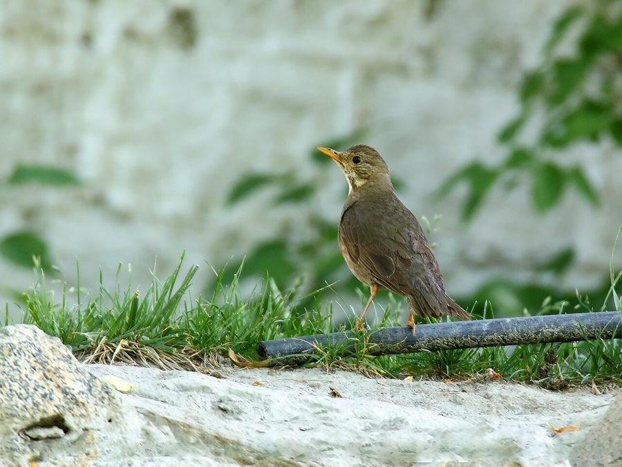

टिकेल्स थ्रशTickell's Thrush
Turdus unicolor · Turdidae · BRD-0231

- Scientific name वैज्ञानिक नाम
- Turdus unicolor Tickell, 1833
- Family कुल
- Turdidae
- Hindi हिंदी
- टिकेल्स थ्रश
- Local names स्थानीय नाम
- tickells thrush, thrush
- Status here यहाँ की स्थिति
- native
- Movement आवागमन
- Winter visitor
- Known from कहाँ दर्ज
- Others have published records from the Basti–Ayodhya districts बस्ती–अयोध्या के ज़िलों से दूसरों के प्रकाशित अभिलेख
- IUCN IUCN
- LC
- Review समीक्षा
- audited and independently read
When to look कब देखें
Winter visitor शीतकालीन प्रवासी. Expected mainly in October, November, December, January, February, March, April. मुख्यतः अक्टूबर, नवंबर, दिसंबर, जनवरी, फ़रवरी, मार्च, अप्रैल में अपेक्षित।
Arrives in October from breeding grounds in the Himalayas; departs by April. Expected on open plains and in cultivated areas. Handbook of the Birds of India and Pakistan (Ali & Ripley 1968) documents winter distribution in the Gangetic plain. All migrants and visitors →
Uses and possibilities उपयोग और संभावनाएँ
Drawn from the documented uses in the profile below, where each is labelled traditional, current or a research lead. All uses →
टिकेल्स थ्रश / Tickell's Thrush
Turdus unicolor Tickell, 1833 — Turdidae
टिकेल्स थ्रश — सर्दियों में हिमालय से आने वाली एक भूरी-नीली पक्षी जो जमीन पर चलती है और कीड़े तथा जामुन खाती है। इसका पूरा शरीर एक ही रंग (नीले-भूरे) का होता है। यह अकेले या छोटे झुंड में रहती है।
Quick Identification त्वरित पहचान
| Feature | Description |
|---|---|
| Size | Medium-sized; 23–25 cm long |
| Overall colour | Uniform slate-blue or slate-grey |
| Underparts | Slightly paler blue-grey |
| Eyes | Dark with pale orbital ring |
| Bill | Orange-yellow with dark tip |
| Legs | Olive-yellow |
| Posture | Upright; often on ground |
| Behaviour | Hops on ground; flicks tail |
Field tip: A medium-sized thrush with uniform slate-blue or slate-grey plumage (no spotted breast as in other thrushes). The unicolorous plumage is the key field mark. Often seen on the ground or low in vegetation, hopping and flicking its tail. Similar to Blue Whistling Thrush but smaller and lacks white spots on wings.
हिंदी — कैसे पहचानें:
एक ही रंग की पक्षी, नीली-भूरी।
जमीन पर चलती है, टेढ़ी पूंछ करती है।
नारंगी-पीली चोंच।
सर्दियों में झुंड में मिलती है।
Morphology आकारिकी
Biometrics:
| Measurement | Range |
|---|---|
| Total length | 230–250 mm |
| Wing (flattened chord) | 110–125 mm |
| Tail | 95–110 mm |
| Bill | 17–20 mm |
| Tarsus | 28–32 mm |
| Weight | 60–80 g |
Size: 23–25 cm long; wingspan 32–38 cm.
Plumage: Entire body uniform slate-blue or slate-grey. Underparts slightly paler. No spots, bars, or other markings. Wings and tail same colour as body, slightly darker. Rump slightly paler.
Head: Uniform slate-blue; no markings.
Eyes: Dark brown; pale orbital ring (thin).
Bill: Orange-yellow or yellowish, darker at tip. Relatively long for a thrush; adapted for gleaning insects and picking fruit.
Legs: Olive-yellow or dull yellow.
Sexes: Females slightly duller than males; very similar overall.
Juveniles: Duller blue-grey; some spotting or scalloping on underparts.
Vocalisations. Call repertoire:
- Song: A melodious, warbled song given from perches; not often heard in winter.
- Contact call: A soft tuk or chuck.
- Alarm call: A sharp chatter or rapid tuk-tuk-tuk.
हिंदी: नर्म संगीतमय आवाज़। "टुक टुक" की कॉल। डर जाने पर तेज़ "चटर" की आवाज़।
Behaviour & Ecology व्यवहार और पारिस्थितिकता
Foraging: Ground feeder, hopping on the ground in search of food. Diet consists of:
- Small insects and arthropods
- Small fruits and berries
- Seeds (occasionally)
Feeding technique: Hops on ground, flicking litter aside to expose invertebrates. Also gleans from low vegetation.
Social behaviour: Solitary or in small flocks in winter; more social than some other thrush species.
Habitat preference: Open grasslands, cultivated fields, scrubland. Avoids dense forest; needs open ground for foraging.
Activity: Primarily diurnal; most active in early morning and late afternoon.
Predators: Small snakes, cats, possibly small raptors.
हिंदी: जमीन पर कीड़े खोजता है। छोटे झुंड में सर्दी में रहता है। जामुन और छोटे फल खाता है।
Life Cycle / Phenology जीवन चक्र
Winter visitor: Absent during breeding season (April–September); returns to eastern UP from October and remains through March or April.
Arrival and departure: First birds arrive in late September or early October; numbers peak in November–February; departure begins in March.
Breeding grounds: Breeding range in the Himalayas from Kashmir to Arunachal Pradesh; does not breed in the plains.
Roosts: Nocturnal roosts in trees and dense bushes.
Moult: Prebasic moult occurs before autumn migration.
हिंदी: अक्टूबर में आता है, अप्रैल तक रहता है। हिमालय में प्रजनन करता है।
Host Plants or Prey आहार
| Food Type | Examples | Feeding Behaviour |
|---|---|---|
| Small insects | Earthworms, beetles, flies, ants | Hop on ground; flip over debris |
| Small berries | Jambul, mulberry, wild fruit | Glean from low vegetation or ground |
| Seeds | Small grass seeds (occasionally) | Pick from ground or plant material |
| Small arthropods | Spiders, millipedes, centipedes | Turn over leaf litter |
हिंदी: जमीन के कीड़े, जामुन और छोटे फल खाता है। पत्तों को पलट कर खोज निकालता है।
Predators / Natural Enemies शत्रु
- Avian predators: Shrikes, small raptors.
- Reptilian predators: Snakes.
- Mammalian predators: Cats, foxes.
हिंदी: शिकारी पक्षी, सांप और बिल्लियाँ इसका शिकार कर सकते हैं।
Agricultural / Human Relevance कृषि प्रासंगिकता
Protected status: Protected under the Wildlife (Protection) Act 1972.
Pest control: Insectivorous and frugivorous bird that helps control insect and weed seed populations.
हिंदी: यह विधि अधिनियम 1972 के अंतर्गत संरक्षित है।
Expected Locally स्थानीय रूप से अपेक्षित
Not a field record. Written from published accounts for eastern Uttar Pradesh. No confirmed local sighting yet — if you have seen it, that is what the atlas needs.
अभी तक स्थानीय पुष्टि नहीं। यह विवरण प्रकाशित स्रोतों से है, किसी अवलोकन से नहीं।
This species is NOT a field record. The distribution below is based on published sources describing where this thrush should be looked for in eastern UP.
Winter range: Expected in eastern Uttar Pradesh from October to April, particularly in open grasslands and cultivated areas with suitable ground conditions.
Habitat preference: Open grassland with short vegetation; cultivated fields; areas with scattered trees.
Peak visibility: November–February when populations are at peak.
Published records: GBIF holds published records from these districts.
What a first record would be: A dated photograph or detailed sighting in a specific location (with GPS coordinates and date) submitted through the About page.
हिंदी: यह पक्षी स्थानीय रूप से अपेक्षित है। खुले मैदानों में ढूंढें।
Distribution वितरण
Global range: Breeds in the Himalayas; winters across the Indian subcontinent. Monotypic.
In India: Occurs as a winter visitor throughout the subcontinent; particularly common in grassland regions.
In Uttar Pradesh: Occurs as a winter visitor across the state.
In Basti district / eastern UP: Regular winter visitor in suitable habitat.
Research Questions शोध प्रश्न
- What is the population trend of Tickell's Thrush wintering in eastern UP?
- How does habitat use differ between grassland and cultivated field areas?
- क्या इसकी संख्या में मौसमी परिवर्तन के आधार पर कोई अंतर होता है?
- What is the diet composition and how does it change during the winter stay?
- Can individual birds be identified and tracked within a season?
- क्या बारिश और सूखे के समय में इसके भोजन में परिवर्तन होता है?
Similar Species मिलती-जुलती प्रजातियाँ
| Species | Key Difference | Hindi | Field Rule |
|---|---|---|---|
| Blue Whistling Thrush (Myophonus caeruleus) | Larger (30 cm); distinctive white spots on wings and throat | सीटी देने वाली कोकिल | Whistling Thrush is larger with prominent white wing spots; Tickell's is unicolorous. |
| Chestnut Thrush (Turdus rubrocanus) | Has rufous areas on breast and underparts | लाल पूंछ कोकिल | Chestnut has rufous coloring; Tickell's is uniformly blue-grey. |
Field rule: Tickell's Thrush is distinguished by its uniform slate-blue coloration with no spots or bars anywhere on the plumage. The unicolorous appearance is diagnostic.
Taxonomy & Classification वर्गीकरण
Original description. Described by Samuel Tickell in 1833 from Himalayan specimens.
Subspecies. Monotypic.
Family and order placement. Order Passeriformes; family Turdidae (thrushes, robins, chats). The genus Turdus comprises the true thrushes.
IUCN status rationale. Least Concern (LC). Widely distributed and populations stable.
हिंदी: यह कोकिल विश्व में पाई जाती है। भारत में अभी सुरक्षित है।
Photo Gallery फोटो गैलरी
No photos yet — add field photos to media/species/tickells_thrush/ and run node scripts/sync_photos.js.
Wanted photos:
- Adult in non-breeding plumage showing uniform slate-blue coloration
- Ground foraging behaviour
- Flock on the ground
- Perched on vegetation
- Head and bill detail
References संदर्भ
- Tickell, S. R. (1833). Description of birds collected during the survey of the Tenasserim coast. Journal of the Asiatic Society of Bengal 2: 575–595.
- Ali, S. & Ripley, S. D. (1973). Handbook of the Birds of India and Pakistan. Vol. 8 (Whydahs to Munias). Oxford University Press, Delhi.
- Cramp, S. & Perrins, C. M. (1993). Handbook of the Birds of Europe, the Middle East and North Africa: The Birds of the Western Palearctic. Vol. 7 (Flycatchers to Shrikes). Oxford University Press.
- Grimmett, R., Inskipp, C. & Inskipp, T. (2011). Birds of the Indian Subcontinent. 2nd edition. Oxford University Press, New Delhi.
- GBIF Occurrence Data — Turdus unicolor, India.
- IUCN Red List (2024). Turdus unicolor — BirdLife International assessment. Status: Least Concern.
Source file: species/fauna/birds/tickells_thrush.md